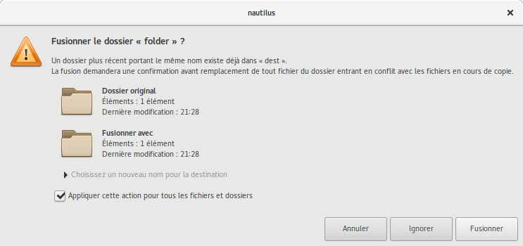
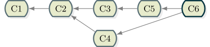
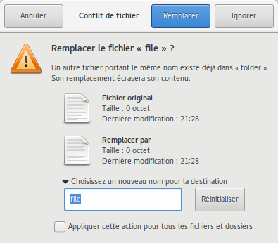

Alexandre Garnier @zigarn
Qui n'a jamais utilisé Git ?
Qui n'a jamais fait de merge ?
Qui n'a jamais eu de problème de merge ?
git clone https://bitbucket.org/zigarn/git-merge-workshop-workspace.git
cd git-merge-workshop-workspace
./run.sh
git status
git stash --include-untracked
On peut simplement voir ça simplement comme la fusion du contenu d'un dossier dans un autre.
Ben c'est pareil : simplement la fusion du contenu d'une branche dans celui d'une autre.
Avec en plus enregistrement du point de fusion.

git checkout branch-A-1
git merge origin/branch-A-2
--no-commit
git reset --hard HEAD@{1} # Rembobiner avant le merge
git merge --no-commit origin/branch-A-2
git status
git diff --cached
git commit
Parce que ça provoque des conflits !
Mais en vrai beaucoup moins souvent qu'on ne se l'imagine.
git checkout branch-B-1
git merge --no-commit origin/branch-B-2
git status
git diff --cached
git commit
Chaque modification possède un contexte.
Si les contextes sont disjoints, il n'y a pas de conflit.
|
|
git checkout branch-C-1
git merge --no-commit origin/branch-C-2
git status
cat run.sh
branch-C-1 ou HEADorigin/branch-C-2 ou MERGE_HEAD
git merge-base branch-C-1 origin/branch-C-2
# Ou plus joliment
git describe --all --always $(git merge-base branch-C-1 origin/branch-C-2)
git diff $(git merge-base branch-C-1 origin/branch-C-2)..branch-C-1
git diff $(git merge-base branch-C-1 origin/branch-C-2)..origin/branch-C-2
Git donne accès au contenu en conflit dans chaque branche.
git show :1:run.sh
git show :2:run.sh
git show :3:run.sh
#!/bin/sh
<<<<<<< HEAD
echo "Hello World from branch-C-1!"
=======
echo "Hello World from branch-C-2!"
>>>>>>> branch-C-2
<<<<<<< HEAD
echo "Hello World from branch-C-1!"
=======
=======
echo "Hello World from branch-C-2!"
>>>>>>> branch-C-2
diff3
git merge --abort
diff3 :
git config --local merge.conflictStyle diff3
git merge origin/branch-C-2
diff3 (suite)
<<<<<<< HEAD
echo "Hello World from branch-C-1!"
||||||| merged common ancestors
||||||| merged common ancestors
echo "Hello World!"
=======
=======
echo "Hello World from branch-C-2!"
>>>>>>> branch-C-2
#!/bin/sh
echo "Hello World from both branch-C-1 and branch-C-2!"
git add run.sh
git commit
diff3.mergetool.<tool>.cmd
git reset --hard HEAD@{1}
git config --local merge.tool kdiff3
git merge origin/branch-C-2
git mergetool
.orig.orig.
echo '*.orig' >> .git/info/exclude
git checkout -m run.sh
vi run.sh
git add run.sh
git commit
both modified : le plus classiquedeleted by them/us : modification sur une branche et suppression sur l'autreboth added : ajout avec contenu différent sur chaque branche
git checkout branch-D-1
git merge --no-commit origin/branch-D-2
git status
# solve conflicts
git add --update
git commit
Dans le cas où OURS==BASE
--no-ff
git checkout branch-E-1
git merge origin/branch-E-2
git reset --hard HEAD@{1}
--no-ff:
git merge --no-ff origin/branch-E-2
git diff HEAD^..HEAD # Regarder que le diff semble correct
./launch_tests.sh # Lancer sa suite de tests
git checkout branch-F-1
git merge --no-commit origin/branch-F-2
./run.sh
J'espère que vous avez moins peur des merges
Pour retenir et/ou aller plus loin